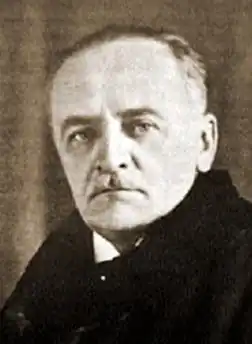

Богдан Лепкий
(9 листопада 1872 — 21 липня 1941)
"НАЙПОПУЛЯРНІША ПОСТАТЬ НА ГАЛИЦЬКОМУ ГРУНТІ..." Звідки походить письменник, хто його батьки, де він навчався, працював, публікував свої твори? Це вперше відкриває для себе не тільки читач, а й дослідник, бо хоч про життя Б. Лепкого було написано чимало, але все це міститься у виданнях, донедавна майже недоступних. Батьківщина Б. Лепкого — Поділля, край благословенний, щедрий, овіяний легендами. Сам поет написав про нього в одному з ранніх своїх віршів — "Заспів": Колисав мою колиску Вітер рідного Поділля І зливав на сонні вії Степового запах зілля. А уособлювало це Поділля мальовниче село Крегулець, розташоване між містечками Гусятином і Копичинцями. Тут народився він 9 листопада 1872р. в родині сільського священика Сильвестра Лепкого. Батько Богдана був людиною освіченою і прогресивною. Він закінчив Львівський університет (класична філологія і теологія), виступав з літературними творами під псевдонімом Марко Мурава, брав участь у виданні часопису "Правда", підготовці підручників для школи. Мав грунтовну філологічну освіту, вільно володів польською і німецькою (вірші німецькою мовою навіть друкував у журналах). Писав популярні книжечки, був головою "Селянської ради". Пізніше Б. Лепкий назве батька своїм найсуворішим критиком. Богдан був першою дитиною в родині Сильвестра і Домни Лепких, які побралися, коли Сильвестр закінчив університет і прийняв сан священика. Щоправда, якийсь час молоде подружжя мешкало в гірському селі Ялинкуватому на нинішній Івано-Франківщині, але незабаром тесть Сильвестра одержав парохію у Бережанах і молодий священик зайняв його місце у Крегульці. Дитинство Богдана було безхмарним, але коли він мав п'ять років, раптово — за одну ніч — померли від дифтериту дві його молодші сестри і брат, що дуже вплинуло на вразливу натуру хлопчика, який і сам ледве вижив. Перші знання майбутній письменник одержав у батьківському домі. Швидко — за одну зиму — навчився читати, писати й рахувати. Батько розповідав йому і про пригоди Робінзона Крузо, і про письменників, художників, портрети яких висіли на стінах, старенька нянька, родом з Наддніпрянської України, співала чумацьких пісень, а від діда по матері Михаила Глібовицького, який замолоду був знайомий з Маркіяном Шашкевичем, допитливий хлопчина дізнався про давні часи, історичні події на Україні. Домашній учитель Богдана Дмитро Бахталовський знайомив його не тільки з основами шкільної науки, а й з творами літератури, завдяки чому його учень уже в дитинстві знав напам'ять багато віршів Тараса Шевченка, читав "Марусю" Г. Квітки-Основ'яненка. Коли Богдана Лепкого віддали шестилітнім хлопцем до бережанської так званої "нормальної" школи з польською мовою навчання (відразу до другого класу), батьки перебралися з "цивілізованого" Крегульця до глухого Поручина, де, як жартома казали тоді, був кінець світу: далі дороги не було. Переселилися, щоб бути ближче до батьків по матері. Як напише пізніше біограф Б. Лепкого, тут усе дихало давниною: "поручинські ґазди" ходили в чоботях на підковах, котрі їм робив місцевий коваль, носили "куртини" з домашнього сукна, брилися бритвами, зробленими із старої скошеної коси, жінки вбиралися в "димки" (полотно з вибиваними узорами), котрі бив "димкар", який приїздив з міста, вишивали гарні сорочки, мережили їх — словом, було це старосвітське село, котрого ще не торкнулася культура століття. "Веснянки, гагілки, обжинки, навіть "вільха" (хоровод у зелену суботу), колядки, щедрівки, множество легенд, повірій, переказів, усе, як колись, в дуже, дуже давніх часах". Між Бережанами та Поручином минала юність Богдана-гімназиста; місто й село формували його характер і світогляд. Від селян він чув багато легенд та переказів про давні часи. Так, люди оповідали, що стара церква, яка тоді ще стояла на горі, була свідком татарських набігів і що під час одного у ній сховалися мешканці всього села, але всі загинули від рук ворога. А коло села Біще, що прилягало до Поручина, збереглися сліди давніх валів, уламки кераміки, наконечники стріл, фундаменти споруд. Все це будило уяву підлітка. Перебування у Поручині, знайомство з людьми, їхнім життям, піснями навіяло йому вірші "На святий вечір", "У великодний тиждень", пісенні ремінісценції з циклу "На позиченій скрипці", про що згодом писав сам письменник, а також сюжети оповідань "Іван Медвідь", "Нездала п'ятка" та інші. Після "нормальної" школи Б. Лепкий вступив до гімназії в Бережанах. Гімназія була польською, з класичним ухилом. Про цей навчальний заклад того часу існують різні, часом взаємно протилежні, свідчення. Бережани були провінційним містечком, без залізничного сполучення з великими містами, отже, й відірваним від центрів культурного життя. Не дивно, що інспектор зі Львова приїздив сюди для перевірки раз у кілька років. Український письменник Михайло Яцків, який вчився тут кількома роками пізніше Лепкого, писав, що сюди посилали втихомирювати неблагонадійних учнів, а атмосфера була такою затхлою, що коли "з'являлася якась здібніша одиниця, то швидко зачахала в тій пустелі, в заскорузлості дилетантизму". А в повісті "Огні горять" цей письменник зобразив її в сатиричному плані, назвавши "ослячим мостом до золотих ковнірів", "пантеоном скастрованих наук". У Б. Лепкого враження про Бережанську гімназію не такі похмурі. Зенон Кузеля, біограф Б. Лепкого, називає Бережани студентськими Афінами, які спричинилися до літературної кар'єри Лепкого. Навіть одірваність від більших міст він трактує позитивно: "Бережанська гімназія ставала приютом талановитих хлопців, котрі стягались до неї з інших міст, де віяло іншим, більш урядовим духом і де їм важко було покінчити науку". Очевидно, кожен з авторів мав підстави для таких різних характеристик та оцінок. В усякому разі, Б. Лепкому і гімназія, і Бережани як осередок культурного життя дали немало. В гімназії були український та польський хори (українським диригував композитор Денис Січинський). Щороку влаштовувалися міцкевичівський, а згодом і шевченківський концерти. Час від часу приїздив сюди мандрівний театр "Руської бесіди", артистів якого Михайло Глібовицький запрошував додому, то Богдан мав змогу познайомитися з Владиславом Плошевським, Іваном Біберовичем, Степаном Яновичем (батьком Леся Курбаса), Марійкою Романовичівною. Він одвідував вистави по стайнях та будах, де змушені були грати актори, ставлячи популярних тоді "Настасю Чагрівну" В. Ільницького, "Запорожця за Дунаєм" С. Гулака-Артемовського, "Ой, не ходи, Грицю...— М. Старицького. До того ж у родині Глібовицьких була велика домашня бібліотека, гімназисти обмінювалися книжками, читали газети "Діло", "Батьківщина", журн. "Мета", "Вечерниці", "Зоря", польську літературу з гімназійної бібліотеки. Українська мова та література спершу в гімназії не викладалися зовсім, потім їх було введено в програму, але уроки вели випадкові люди, а не фахівці, і лише коли Б. Лепкий був у п'ятому класі, М. Бачинський поставив викладання цього предмета на фаховий рівень. За свідченням сучасників, конфліктів між учнями на національній основі не було, на концерти й театральні вистави ходила і українська і польська молодь. Загострення польсько-українських національних відносин Б. Лепкий пов'язує з появою роману Г. Сенкевича "Вогнем і мечем" про події національно-визвольної війни українського народу під керівництвом Б. Хмельницького, зображені у викривленому світлі, що обурило українських гімназистів. Серед гімназійних друзів Богдана Лепкого треба в першу чергу назвати Сильвестра Яричевського, пізніше українського поета, прозаїка і драматурга. На жаль, у радянський час на Україні не вийшло жодного окремого видання цього в свій час досить відомого письменника прогресивної орієнтації, натомість видавництво "Критеріон" (Бухарест) у 1977 —1978 pp. видало його двотомник, який упорядкувала румунська україністка М. Ласло-Куцюк. Початок літературної творчості обох письменників відноситься до часу їх навчання в Бережанській гімназії, до того ж пов'язаний він з одним випадком. Б. Лепкий та С. Яричевський написали письмову роботу з української мови про зимовий день на селі: Лепкий — прозою, а Яричевський — віршами. Вчитель похвалив їх, і це заохотило юнаків до літературної творчості. Власне, то був перший вихід на публіку, бо і Богдан і Сильвестр писали вже й до того, останній, зокрема, мав рукописний зошит з віршами, перекладами та сатиричними творами, частина з яких друкувалася у львівському журн. "Зеркало" та ввійшла до першої його поетичної збірки "Пестрі звуки" (Чернівці, 1904). Щодо Лепкого, то він почав писати дуже рано. Ще в другому класі гімназії під впливом бабусиних оповідей написав поему про русалок, але сховав її під стріху, де вона й пропала. Згодом писав принагідно, на клаптиках паперу на полях книжок та зошитів, серйозно ж готувався стати художником, з цією метою брав уроки в художника Юліана Панкевича... Після закінчення гімназії Б. Лепкий вступив у Відні до Академії мистецтв, але навчання у ній морального задоволення не принесло, він відчув, що розминувся із своїм справжнім покликанням. Нудно було змальовувати гіпсові статуї, щоразу натикаючись на зауваження викладача, що контури надто гострі і т. ін. Але стався випадок, який визначив майбутню долю Лепкого, допоміг юнакові знайти себе. Якось у поїзді йому довелося їхати в одному купе з Кирилом Студинським, який навчався тоді на філософському факультеті Віденського університету. Це знайомство не тільки зблизило двох у майбутньому видатних діячів української культури, а й спрямувало його творчі інтереси в новому напрямку. Лепкий став відвідувати лекції у Віденському університеті, в тому числі й відомого славіста В. Ягича. Він став учасником студентського товариства "Січ", брав участь у дискусіях на літературні та суспільно-політичні теми, близько зійшовся з майбутнім відомим фольклористом Філаретом Колессою, Михайлом Новицьким та іншими студентами-українцями. Згодом Б. Лепкий переходить до Львівського університету, де рівень викладання був не такий високий, як у Відні. Українську мову і літературу викладав Омелян Огоновський, який головну увагу приділяв граматиці, а в студіях з літератури, як зазначав іще І.